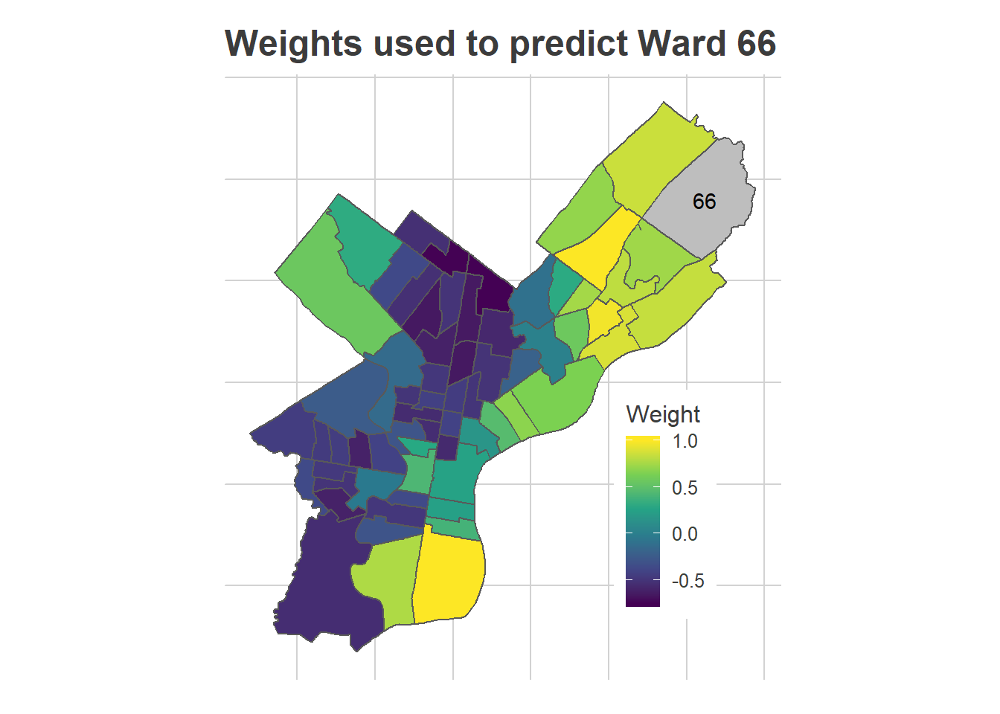

Philadelphia’s turnout on November 3rd was disappointing, but it was far from the bloodbath that the Turnout Tracker was predicting.
At the end of Election Day, I was estimating 285,000 in-person votes, with a CI of (262K, 303K). The actual number was 360K. What went wrong?
knitr::opts_knit$set(echo = FALSE, warning = FALSE, message=FALSE)
# setwd("C:/Users/Jonathan Tannen/Dropbox/sixty_six/posts/turnout_tracker/tracker_v0/")
library(dplyr)## Warning: package 'dplyr' was built under R version 3.6.3##
## Attaching package: 'dplyr'## The following objects are masked from 'package:stats':
##
## filter, lag## The following objects are masked from 'package:base':
##
## intersect, setdiff, setequal, unionlibrary(stargazer)##
## Please cite as:## Hlavac, Marek (2018). stargazer: Well-Formatted Regression and Summary Statistics Tables.## R package version 5.2.2. https://CRAN.R-project.org/package=stargazersource("config.R", chdir=TRUE)
source("../../R/util.R", chdir=TRUE)##
## Attaching package: 'gridExtra'## The following object is masked from 'package:dplyr':
##
## combinesource("../../R/generate_plots.R", chdir=TRUE)## Linking to GEOS 3.6.1, GDAL 2.2.3, PROJ 4.9.3##
## Attaching package: 'lubridate'## The following object is masked from 'package:base':
##
## date## Warning: package 'doParallel' was built under R version 3.6.2## Loading required package: foreach## Loading required package: iterators## Loading required package: parallel##
## Attaching package: 'MASS'## The following object is masked from 'package:dplyr':
##
## select##
## Attaching package: 'tidyr'## The following object is masked from 'package:magrittr':
##
## extract##
## Attaching package: 'Matrix'## The following objects are masked from 'package:tidyr':
##
## expand, pack, unpack## This version of Shiny is designed to work with 'htmlwidgets' >= 1.5.
## Please upgrade via install.packages('htmlwidgets').source("../../R/bootstrap.R", chdir=TRUE)
config <- extend_config(config)
params <- readRDS("outputs/params.Rds")
bs <- readRDS("outputs/bootstrap.Rds")
get_ward <- config$get_ward_from_precinct
raw_data <- readRDS("outputs/raw_data.Rds") %>%
mutate(
ward=get_ward(precinct),
time_of_day=config$base_time + minutes(minute)
)
current_time <- max(bs@raw_result@time_df$time_of_day)
turnout_df <- get_ci_from_bs(bs, predict_topline, keys="time_of_day")
current_turnout <- filter_to_eod(turnout_df)
ward_turnout <- get_ci_from_bs(
bs,
predict_ward_turnout,
get_ward=get_ward,
keys="ward"
)## `summarise()` ungrouping output (override with `.groups` argument)## `summarise()` ungrouping output (override with `.groups` argument)
## `summarise()` ungrouping output (override with `.groups` argument)
## `summarise()` ungrouping output (override with `.groups` argument)
## `summarise()` ungrouping output (override with `.groups` argument)
## `summarise()` ungrouping output (override with `.groups` argument)
## `summarise()` ungrouping output (override with `.groups` argument)
## `summarise()` ungrouping output (override with `.groups` argument)
## `summarise()` ungrouping output (override with `.groups` argument)
## `summarise()` ungrouping output (override with `.groups` argument)
## `summarise()` ungrouping output (override with `.groups` argument)
## `summarise()` ungrouping output (override with `.groups` argument)
## `summarise()` ungrouping output (override with `.groups` argument)
## `summarise()` ungrouping output (override with `.groups` argument)
## `summarise()` ungrouping output (override with `.groups` argument)
## `summarise()` ungrouping output (override with `.groups` argument)
## `summarise()` ungrouping output (override with `.groups` argument)
## `summarise()` ungrouping output (override with `.groups` argument)
## `summarise()` ungrouping output (override with `.groups` argument)
## `summarise()` ungrouping output (override with `.groups` argument)
## `summarise()` ungrouping output (override with `.groups` argument)
## `summarise()` ungrouping output (override with `.groups` argument)
## `summarise()` ungrouping output (override with `.groups` argument)
## `summarise()` ungrouping output (override with `.groups` argument)
## `summarise()` ungrouping output (override with `.groups` argument)
## `summarise()` ungrouping output (override with `.groups` argument)
## `summarise()` ungrouping output (override with `.groups` argument)
## `summarise()` ungrouping output (override with `.groups` argument)
## `summarise()` ungrouping output (override with `.groups` argument)
## `summarise()` ungrouping output (override with `.groups` argument)
## `summarise()` ungrouping output (override with `.groups` argument)
## `summarise()` ungrouping output (override with `.groups` argument)
## `summarise()` ungrouping output (override with `.groups` argument)
## `summarise()` ungrouping output (override with `.groups` argument)
## `summarise()` ungrouping output (override with `.groups` argument)
## `summarise()` ungrouping output (override with `.groups` argument)
## `summarise()` ungrouping output (override with `.groups` argument)
## `summarise()` ungrouping output (override with `.groups` argument)
## `summarise()` ungrouping output (override with `.groups` argument)
## `summarise()` ungrouping output (override with `.groups` argument)
## `summarise()` ungrouping output (override with `.groups` argument)precinct_turnout <- get_ci_from_bs(
bs,
predict_precinct_eod,
keys="precinct"
)
ci_df <- get_ci_from_bs(bs, predict_topline, keys="time_of_day", eod=FALSE)
winsorize <- function(x, t = 0.95){
mean_x <- mean(x, na.rm=TRUE)
x_demean <- x - mean_x
cutoff <- quantile(abs(x_demean), probs=t, na.rm=TRUE)
return(
mean_x + sign(x_demean) * pmin(abs(x_demean), cutoff)
)
}
resid_data <- raw_data %>%
mutate(
pred = predict_turnout(
bs@raw_result,
precinct=precinct,
time_of_day=time_of_day
)$turnout,
resid = winsorize(log_obs - log(pred))
) %>%
left_join(ci_df)## Joining, by = "precinct"## Joining, by = "time_of_day"
## Joining, by = "time_of_day"ggplot(
ci_df,
aes(x=time_of_day, y=turnout)
) +
geom_point(data=resid_data, aes(y=turnout * exp(resid))) +
geom_ribbon(
aes(ymin = p025, ymax = pmin(p975, 1.5e6)),
alpha = 0.2,
color = NA,
fill = strong_purple
) +
geom_line(size = 2, color = strong_purple) +
scale_x_datetime("", date_labels = "%I", date_breaks = '1 hour') +
scale_y_continuous("", labels = scales::comma) +
geom_hline(yintercept = 360e3) +
geom_text(
data = data.frame(
turnout = 360e3,
time_of_day = rep(config$base_time + minutes(30), 1),
label = "Actual Turnout = 360K"
),
aes(label=label, y=turnout),
vjust = 1.2,
hjust = 0
) +
expand_limits(x = config$election_day + hours(config$end_hour), y=0) +
ggtitle("Estimated In-Person Election Turnout") +
theme_sixtysix() The miss was not the same across the city.
divs <- readRDS("data/precincts.Rds")
wards <- readRDS("data/wards.Rds")
turnout_20 <- readr::read_csv("../../../../election_night_2020/data/wards_1118.csv") %>%
rename(ward=Division) %>%
rename(total_votes=`Votes Cast`, inperson=PollingPlace)## Parsed with column specification:
## cols(
## Division = col_character(),
## `Registered Voters*` = col_double(),
## `Votes Cast` = col_double(),
## `Percent Turnout**` = col_double(),
## PartyCode = col_logical(),
## CurrentDateTime = col_character(),
## IsReported = col_double(),
## PollingPlace = col_double(),
## MailIn = col_double()
## )wards %<>%
left_join(ward_turnout) %>%
left_join(turnout_20)## Joining, by = "ward"## Joining, by = "ward"fill_scale <- 1 + c(-1, 1) * with(wards, max(abs(turnout/inperson - 1)))
ggplot(wards, aes(fill=turnout / inperson)) +
geom_sf() +
scale_fill_gradient2(low=strong_orange, high=strong_purple, midpoint = 1) +
expand_limits(fill=fill_scale) +
theme_map_sixtysix() +
labs(
title="Tracker Predictions vs Eventual Results",
fill="Prediction / Truth"
)This is bad. I underpredicted the whole of the Northeast, plus North, West, and South Philly. I also ended up over-predicting Center City and Chestnut Hill (and way over-predicting Penn’s 27th).
The patterns here map clearly to the city’s Voting Blocs, but it’s important to make clear that the model already accounts for historic correlations among Voting Blocs. In fact, here’s the same map from the 2019 primary.
# bs_19 <- readRDS("../phila_201911/outputs/bootstrap.Rds")
# ward_turnout_19 <- get_ci_from_bs(
# bs,
# predict_ward_turnout,
# get_ward=get_ward,
# keys="ward"
# )
ward_turnout_19 <- readr::read_csv("../phila_201905/outputs/precinct_turnout_philadelphia.csv") %>%
mutate(ward=substr(precinct, 1, 2)) %>%
group_by(ward) %>%
summarise(pred_19=sum(turnout))## Parsed with column specification:
## cols(
## precinct = col_character(),
## turnout = col_double(),
## sum_fe = col_double(),
## re_over_fe = col_double()
## )## `summarise()` ungrouping output (override with `.groups` argument)col_names <- readr::read_csv("../../../../../data/voter_registration/col_names.csv")## Parsed with column specification:
## cols(
## name = col_character(),
## type = col_character(),
## desc = col_character()
## )fve_19 <- readr::read_tsv(
"../../../../../data/voter_registration/20190624/PHILADELPHIA FVE 20190624.txt",
col_names = col_names$name
)## Parsed with column specification:
## cols(
## .default = col_character(),
## `House Number` = col_double(),
## Zip = col_double(),
## `Mail Address 2` = col_logical(),
## `Mail Zip` = col_double(),
## `District 3` = col_logical(),
## `District 5` = col_logical(),
## `District 17` = col_logical(),
## `District 18` = col_logical(),
## `District 19` = col_logical(),
## `District 20` = col_logical(),
## `District 21` = col_logical(),
## `District 22` = col_logical(),
## `District 23` = col_logical(),
## `District 24` = col_logical(),
## `District 25` = col_logical(),
## `District 26` = col_logical(),
## `District 27` = col_logical(),
## `District 28` = col_logical(),
## `District 29` = col_logical(),
## `District 30` = col_logical()
## # ... with 28 more columns
## )## See spec(...) for full column specifications.## Warning: 658337 parsing failures.
## row col expected actual file
## 1944 Election 1 Party 1/0/T/F/TRUE/FALSE UNK '../../../../../data/voter_registration/20190624/PHILADELPHIA FVE 20190624.txt'
## 2084 Mail Zip no trailing characters -0583 '../../../../../data/voter_registration/20190624/PHILADELPHIA FVE 20190624.txt'
## 3129 Election 40 Vote Method 1/0/T/F/TRUE/FALSE AP '../../../../../data/voter_registration/20190624/PHILADELPHIA FVE 20190624.txt'
## 3129 Election 40 Party 1/0/T/F/TRUE/FALSE D '../../../../../data/voter_registration/20190624/PHILADELPHIA FVE 20190624.txt'
## 4295 Election 40 Vote Method 1/0/T/F/TRUE/FALSE AP '../../../../../data/voter_registration/20190624/PHILADELPHIA FVE 20190624.txt'
## .... ....................... ...................... ...... ...............................................................................
## See problems(...) for more details.true_turnout_19 <- fve_19 %>%
mutate(
voted_19 = `Election 8 Vote Method` == "AP",
ward=substr(`District 2`, 3, 4)
) %>%
group_by(ward) %>%
summarise(
reg_19=n(),
voted_19=sum(voted_19, na.rm=TRUE)
)## `summarise()` ungrouping output (override with `.groups` argument)turnout_df <- readRDS("../../../../../data/processed_data/df_major_20200813.Rds")
turnout_df <- turnout_df %>% filter(is_topline_office) %>%
mutate(ward=substr(warddiv, 1, 2)) %>%
group_by(ward, year, election_type) %>%
summarise(turnout=sum(votes))## `summarise()` regrouping output by 'ward', 'year' (override with `.groups` argument)ggplot(
wards %>%
left_join(ward_turnout_19 %>% select(ward, pred_19)) %>%
left_join(true_turnout_19),
aes(fill=pred_19 / voted_19)
) +
geom_sf() +
scale_fill_gradient2(low=strong_orange, high=strong_purple, midpoint = 1) +
theme_map_sixtysix() +
expand_limits(fill=fill_scale) +
labs(
title="Tracker Predictions vs Eventual Results, 2019 Primary",
fill="Prediction / Truth"
)## Joining, by = "ward"## Joining, by = "ward"There’s much less of a pattern, and the model handled all of the correlations pretty well. It underpredicted Hispanic North Philly, where there was a competitive 7th District council race, but overall the true turnout was well within the CI, and we missed getting it on the noce by only 14K votes.
So yes, something went wrong this year, and yes, it’s correlated with the Voting Blocs. But it’s not as simple as failing to account for correlations. Instead, Covid broke the historic patterns.
First, some background.
The Turnout Tracker takes submissions from voters across the city. Participants give me (a) their division, (b) the time of day, and (c) their “voter number” in their division: how many people have voted before them, plus them. The result is I can estimate the cumulative distribution of votes for each division, and the total number of votes cast so far across the city.
Doing that well requires some hefty statistical work. I use historic correlations among divisions to predict the votes in divisions without any submissions, and estimate a non-parametric time distribution (the curvy line above) on the fly. And I bootstrap the whole thing to get confidence intervals. (Math person? See the Appendix, and then the github repo, for the math.)
A common concern I get about the Tracker is “what if you don’t get many submissions from a ward?” People are concerned that if I don’t get any submissions from the 66th, for example, I’ll treat that as if zero people there voted. Or maybe just assume the 66th is the same as the places where I do have submissions. But I don’t. I use the historic correlations to effectively take a weighted average among the submissions of the wards that historically have been similar. Having submissions from the ward itself will make me more confident in the estimate, but ward estimates should not be biased just because we don’t have submissions. As a toy example, suppose the city had two wards, which historically showed no correlations. If all of the submissions were from Ward A, then that would have no effect on the estimate for Ward B (they’re uncorrelated): the tracker would simulate Ward B as having the entire range of historic turnouts it’s ever had. The error bars would be huge. As we got submissions from Ward B, the estimate would narrow down on a portion of that range, becoming more confident. In the real Tracker, each Ward is correlated with other Wards at some value between -1 and 1.
For example, in predicting the Northeast’s 66th Ward relative to the city as a whole, here is the weighting I give to submissions from each other ward:
D <- sparseMatrix(
i=1:nrow(raw_data),
j=raw_data$precinct_num,
x=1,
dims=c(nrow(raw_data),nrow(params@precinct_fe))
)
sigma_e <- 0.1
w <- rowSums(solve(D %*% params@precinct_cov_inv %*% t(D) + Diagonal(n=nrow(D), x=sigma_e)))
w <- w / sum(w)
r <- (
raw_data$log_obs
- bs@raw_result@time_df$log_fit[raw_data$minute]
+ max(bs@raw_result@time_df$log_fit)
)
alpha <- t(r - D %*% params@precinct_fe$precinct_fe) %*% w
alpha <- alpha[1,1]
weight_mat <- solve(Diagonal(nrow(params@precinct_cov)) + sigma_e^2 * params@precinct_cov_inv)
target_div <- "6616"
target_ward <- "66"
mat_row <- which(substr(params@precinct_fe$precinct, 1, 2)==target_ward)
divs <- divs %>%
left_join(
params@precinct_fe %>%
mutate(weight = colMeans(weight_mat[mat_row,])),
by=c("precinct")
)
ward_weights <- divs %>%
filter(precinct != target_div) %>%
as.data.frame() %>%
group_by(ward) %>%
summarise(weight = mean(weight)) ## `summarise()` ungrouping output (override with `.groups` argument)scale_weight <- function(x){
x / max(abs(x))
}
ggplot(
wards %>% filter(ward!=target_ward) %>% left_join(ward_weights)
) +
geom_sf(aes(fill=scale_weight(weight))) +
geom_sf(data=wards %>% filter(ward==target_ward), fill="grey") +
geom_text(
data=st_centroid(wards) %>%
filter(ward == target_ward) %>%
mutate(
x=st_coordinates(geometry)[1],
y=st_coordinates(geometry)[2]
),
aes(label=ward, x=x, y=y)
) +
scale_fill_viridis_c() +
theme_map_sixtysix() +
labs(
title=sprintf("Weights used to predict Ward %s", target_ward),
fill="Weight"
)## Joining, by = "ward"## Warning in st_centroid.sf(wards): st_centroid assumes attributes are constant
## over geometries of x## Warning in st_centroid.sfc(st_geometry(x), of_largest_polygon =
## of_largest_polygon): st_centroid does not give correct centroids for longitude/
## latitude data Notice that the 66th Ward depends mostly on other Northeast and South Philly wards, followed by the River Wards and Manayunk, then Center City West. In fact, conditional on the overall city turnout, it usually swings in the opposite direction of North and West Philly. (Though it’s worth pointing out that the “overall city turnout” uses all wards, so high numbers in North Philly may increase the 66th’s estimate by increasing the total estimate.)
The key is that the Tracker will not be broken by disproportionate submissions, or by large swings of turnout among Philadelphia’s Voting Blocs that are consistent with historic swings. Instead, what breaks the Tracker is when an entirely new pattern emerges, or a really big one, that we haven’t seen in the data back to 2002. And on Tuesday, November 3rd, that’s what happened.
This was the first year with no-excuse mail-in voting, and Covid meant that we would have enormous usage of it. Ahead of the election, I needed to figure out how to account for that.
The patterns of requests seemed to break down along familiar lines: the progressive wards of Center City and the ring around it requested ballots at high rates, while Black wards of West and North Philly did so somewhat less, and the Trumpy wards of South Philly and the Northeast less still. The pattern was familiar, and mapped to the Voting Blocs almost perfectly.
So I figured that once we subtract out the mail-in votes, the remaining in-person votes would look a lot like a typical election. Maybe what would happen is the Wealthy Progressive wards would swing towards low turnout, and everywhere else high, but those correlations would be correctly captured by the model. I decided to treat Election Day in-person turnout as any other election, ignoring the mail-in votes. Post-hoc, I added back the mail-in votes to get an accurate picture of the true topline.
What I decided not to do is parametrize model with mail-in votes to explicitly adjust the predictions (e.g. expecting places with low mail-in requests to vote in-person at much higher rates), or allow for different-than-normal covariances. But when you just pretend in-person votes were all that there was, this election was unlike any we’ve ever seen.
A jarring example is comparing the 66th Ward in the Northeast, from which I had no submissions, to the 8th Ward in Center City, from which I had a ton.
ggplot(
turnout_df %>% filter(ward %in% c("08", target_ward)) %>%
mutate(ward=ifelse(ward==target_ward, "target", ward)) %>%
pivot_wider(names_from=ward, values_from=turnout, names_prefix = "t_"),
aes(x=year, group=election_type, y=t_target / t_08)
) +
geom_point(size=4, color=strong_blue) +
geom_line(aes(linetype=election_type), color=strong_blue) +
# geom_histogram(binwidth = 0.1, boundary=0) +
# geom_vline(
# xintercept=ward_turnout %>%
# filter(ward %in% c("45", "08")) %>%
# select(ward, turnout_20) %>%
# pivot_wider(names_from="ward", values_from="turnout_20") %>%
# with(`45`/`08`),
# linetype="dashed"
# ) +
theme_sixtysix() +
labs(
title=sprintf("Distribution of %sth Ward turnout vs 8th", target_ward),
subtitle="Elections from 2002 to the 2020 primary.",
y=sprintf("Ward %s Turnout / Ward 8 Turnout", target_ward),
x=NULL,
linetype="Election"
)Typically, the 66th Ward casts about the same number of votes as the 8th Ward. Its high-water mark was in 2003, when it had 57% more votes than the 8th. In every year since 2016, it’s cast fewer.
So the Tracker expected the 66th Ward’s turnout to be somewhere in this range. I figured the 66th would make up for some of its mail-in lag, and we’d see in-person turnout at maybe 1.5 times the 8th. In other words, we’d see an extreme but historically-plausible proportion.
Here’s what happened:
ggplot(
turnout_df %>% filter(ward %in% c("08", target_ward)) %>%
mutate(ward=ifelse(ward==target_ward, "target", ward)) %>%
pivot_wider(names_from=ward, values_from=turnout, names_prefix = "t_") %>%
bind_rows(
turnout_20 %>%
filter(ward %in% c(target_ward, "08")) %>%
mutate(ward=ifelse(ward==target_ward, "target", ward)) %>%
select(ward, inperson) %>%
pivot_wider(names_from="ward", values_from="inperson", names_prefix = "t_") %>%
mutate(year = "2020", election_type="general")
),
aes(x=year, group=election_type, y=t_target / t_08)
) +
geom_line(aes(linetype=election_type), color=strong_blue) +
geom_point(size=4, aes(color=(year == 2020 & election_type=="general"))) +
scale_color_manual(values=c(`FALSE`=strong_blue, `TRUE`=strong_red), guide=FALSE) +
# geom_histogram(binwidth = 0.1, boundary=0) +
# geom_vline(
# xintercept=ward_turnout %>%
# filter(ward %in% c("45", "08")) %>%
# select(ward, turnout_20) %>%
# pivot_wider(names_from="ward", values_from="turnout_20") %>%
# with(`45`/`08`),
# linetype="dashed"
# ) +
theme_sixtysix() +
labs(
title=sprintf("Distribution of %sth Ward turnout vs 8th", target_ward),
subtitle="Elections from 2002 to the 2020 general (in red).",
y=sprintf("Ward %s Turnout / Ward 8 Turnout", target_ward),
x=NULL,
linetype="Election"
)I completely underestimated the amount of catch-up that would happen on Election Day. The 66th Ward actually had 2.4 times the in-person votes of the 8th, a value that would seem impossible based on historic data. My assumption that in-person votes would look like maybe 2003 was wrong.
Obviously this didn’t just happen in the 66th and 8th. A similar plot exists for all of the errors in the maps above.
The result is that the Tracker vastly underpredicted the Northeast, expecting it to be more like Center City than it was (and overpredicted Center City and the universities).
Mail-in voting is here to stay, though hopefully Covid isn’t. What should be fixed for next elections? There are two possible strategies:
Parametrize the model for mail-in requests. Allow the Tracker to adjust the covariances for the mail-ins requested, and expect a positive amount of catch-up in the low-requesting wards.
Don’t overcorrect. This was probably an outlier election, thanks to Covid. Plus, when I retrain the model in May, I’ll have this election in the training set, so its priors should sufficiently allow for this trend. Finally, in future elections without Trump on the ballot, mail-ins will probably be less partisan. All of this suggests future elections should be relatively safe from this pandemic outlier.
I need to think about this, but I’ll probably choose a mix of these two strategies, and test the heck out of the new version for cases where mail-ins go berserk.
Plus, maybe I’ll finally get my act together and sufficiently recruit submissions from all wards in the city.
Suppose we have \(N_{obs}\) submissions for division voter counts. The turnout tracker models turnout response \(x_i\) on the log-scale, as \[ \log(x_{i}) = \alpha + \gamma_{d_i} + f(t_i) + \epsilon_i \] where \(\alpha\) is a fixed effect that scales the annual turnout, \(\gamma_d\) is an \(N_{div}\)-length vector of division-level random effects, with means and covariance that I’ve estimated on historic data, \(f(t)\) is a time-trend that goes from \(e^{f(0)} = 0\) at the start of the day to \(e^{f(t_{max})} = 1\) at the end (clearly \(f(0)\) is undefined, but we can get around this by only starting with the first datapoint), and \(\epsilon\) is noise.
The \(\gamma\) vector of division random effects are modeled as \[ \gamma \sim N(\mu, \Sigma) \] where \(\mu\) and \(\Sigma\) are estimated based on historic data of all Philadelphia elections since 2002.
The model simultaneously estimates \(\alpha\), \(f\), and the expectation of \(\gamma\) conditional on \(x\).
Suppose we know \(f(t)\). Define the residual as \(r_i = log(x_i) - f(t_i)\). Then the \(r_i\) are drawn from a normal \[ r_i \sim N(\alpha + \gamma_{d_i}, \sigma_\epsilon) \] Marginalizing out \(\gamma\), the covariance of \(r_i\), \(r_j\), \(i\neq j\), is \(\Sigma_{d_i, d_j}\), so the vector of \(r\) is drawn from a big multivariate normal, \[ r \sim N(\alpha + D\mu, D \Sigma D' + Diag(\sigma_\epsilon)) \] where \(D\) is a \(N_{obs} \times N_{div}\) matrix with \(D_{ij} = 1\) if observation \(i\) belongs to division \(j\), 0 otherwise.
The log likelihood of \(r\) is \[ L(r; \alpha) = -\frac{1}{2} (r - \alpha - D \mu)' (D \Sigma D' + Diag(\sigma_\epsilon))^{-1} (r - \alpha - D \mu) + C \] and is maximized for an alpha satisfying \[ 0 = (r - \alpha_{MLE} - D\mu)'(D \Sigma D' + Diag(\sigma_\epsilon))^{-1}1_{N_{obs}} \\ \alpha_{MLE} = \frac{(r - D\mu)'(D \Sigma D' + Diag(\sigma_\epsilon))^{-1}1_{N_{obs}}}{1_{N_{obs}}' (D \Sigma D' + Diag(\sigma_\epsilon))^{-1}1_{N_{obs}}} \] To keep ourselves sane, we can write this as \[ \alpha_{MLE} = (r - D\mu)' w \] where \(w\) is the \(N_obs\)-length weight-vector defined above. The key to the above formula is that observations from covarying divisions are discounted, so for example if we see two observations from divisions we know vote the same, they each get only half the weight.
Now consider \(\gamma\). Returning to the non-marginalized distribution, and plugging in \(\alpha_{MLE}\), the log-likelihood of \(r\) is \[ L(r; \gamma) = -\frac{1}{2 \sigma_\epsilon^2} (r - \alpha_{MLE} - D\gamma)'(r - \alpha_{MLE} - D\gamma) - \frac{1}{2}(\gamma - \mu)'\Sigma^{-1}(\gamma - \mu) + C \] Optimizing for \(\gamma_{MLE}\) gives \[ 0 = \frac{1}{\sigma_\epsilon^2} D'(r - \alpha_{MLE} - D\gamma_{MLE}) - \Sigma^{-1}(\gamma_{MLE} - \mu) \\ 0 = \frac{1}{\sigma_\epsilon^2} D'(r - \alpha_{MLE} - D(\gamma_{MLE}- \mu + \mu)) - \Sigma^{-1}(\gamma_{MLE} - \mu) \\ \left(\frac{D'D}{\sigma_\epsilon^2} + \Sigma^{-1}\right)(\gamma_{MLE} - \mu) = \frac{D'(r - \alpha_{MLE} - D\mu)}{\sigma_\epsilon^2} \\ \gamma_{MLE} - \mu = \left(\frac{D'D}{\sigma_\epsilon^2} + \Sigma^{-1}\right)^{-1} \frac{D'(r - \alpha_{MLE} - D\mu)}{\sigma_\epsilon^2} \] Note that \(D'D\) is just a diagonal matrix where the diagonal is the number of observations belonging to that division.
This is just a shrunk, weighted average of the deviations \(r\) from the means \(\alpha + D\mu\). Remember that \(D\) just maps observations to divisions, and \(D'D\) is just a diagonal with the number of observations to each division. So suppose we saw one observation from each division. The relative contributions to the random effects would be given by \((I + \sigma_\epsilon^2 \Sigma^{-1})^{-1}\) times each observation’s deviance from its mean. (This is what I map above.)